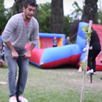

Quiénes somos
ANEIC Concepción del Uruguay

La Asociación Nacional de Estudiantes de Ingeniería Civil (ANEIC) es una organización conformada por estudiantes de ingeniería civil de todo el país; es autónoma, de carácter científico, tecnológico y cultural, sin fines de lucro y ajena a toda actividad política, partidaria o religiosa.
ANEIC ARGENTINA se posiciona como una agrupación reconocida en la comunidad social, empresarial y universitaria, como referente nacional e internacional de integración, perfeccionamiento y potenciación de los estudiantes de nuestra carrera. Promover la integración académica de todos los estudiantes de ingeniería civil, mediante la planificación, organización y ejecución de eventos nacionales abocados a actividades académicas, de investigación, culturales y deportivas, como así también participar responsablemente en los procesos que afectan a la profesión y la sociedad.
La filial ANEIC CdelU (Concepción del Uruguay) se trata de una organización local ubicada en la región Este conformada a principios del año 2016. Dicha filial tiene como objetivo representar a ANEIC Argentina de forma tal que los estudiantes tengan conocimiento de la existencia de dicha asociación y que finalmente sean parte de la misma.
JOREIC
Jornada Regional de Estudiantes de Ingeniería Civil
La Jornada Regional de Estudiantes de Ingeniería Civil (JOREIC) es una actividad académica, social y cultural en la que se tratan dos ejes temáticos, electos por comisión organizadora, expuestos por distintos profesionales.
Anteriormente, se realizó la primer Jornada de la región, la cual tuvo lugar en la Ciudad Autónoma de Buenos Aires, esto fue un disparador para que la organización siga creciendo y afianzándose. Gracias a esto, la filial de Concepción del Uruguay se postuló y fue seleccionada para la Segunda Jornada de la Región Este a desarrollarse en la ciudad de Concepción del Uruguay los días 18, 19 y 20 de mayo del año 2017.

Visitas Técnicas
Para información sobre fecha y horarios ver el Cronograma
Complejo Hidroeléctrico Salto Grande
Inaugurado en 1983, el Complejo Hidroeléctrico... Más Info
Cantera Tayreta
Estratégicamente ubicada en las cercanías de la ciudad...Más Info
Cantera La Chola II
Localizada en las proximidades del Palmar de Colón...Más Info
Defensa Sur
La ciudad de Concepción del Uruguay es periódicamente...Más Info
Puente y Av. Costanera - Isla del Puerto
Una de las mayores inversiones en la ciudad destinada a convertir...Más Info
Guay I - Edificio sustentable
Es el primer gran edificio de la provincia que aspira a certificar...Más Info
Cronograma de actividades
Para conocer los lugares de las respectivas actividades ver el Mapa
-
Acreditaciones
Fecha: Jueves 18 – 9 a 12 horas
Lugar: UTN FRCU
-
Disertaciones - Ambiental
Fecha: Jueves 18 - 14 a 20 horas
Auditorio Municipal Carlos M. Scelzi.
-
Visitas Técnicas
Fecha: Viernes 19 - Horarios específicos de cada visita
Lugar: Específico para cada visita. Ver mapa.
-

Recreativa
Fecha: Viernes 19 – Al finalizar las visitas técnicas.
-
Disertaciones - Madera en la construcción
Fecha: Sábado 20 – 14 a 19 horas
Lugar: Auditorio Municipal Carlos María Scelzi
-
Clausura
Fecha: Sábado 20 – 19 a 20 horas
Lugar: Auditorio Municipal Carlos María Scelzi